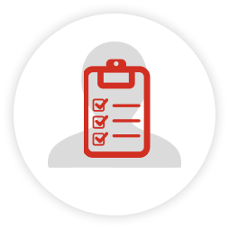
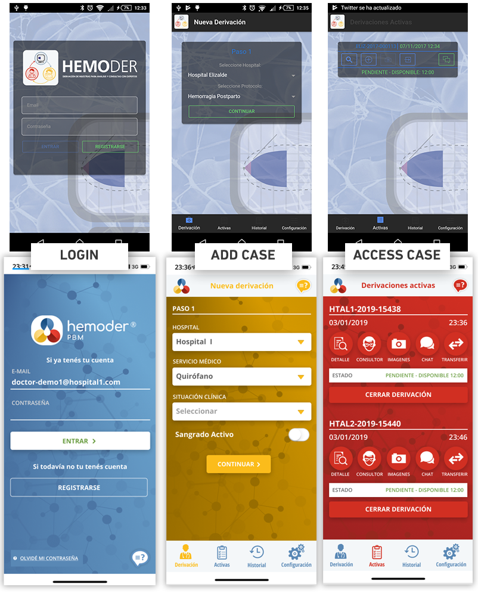
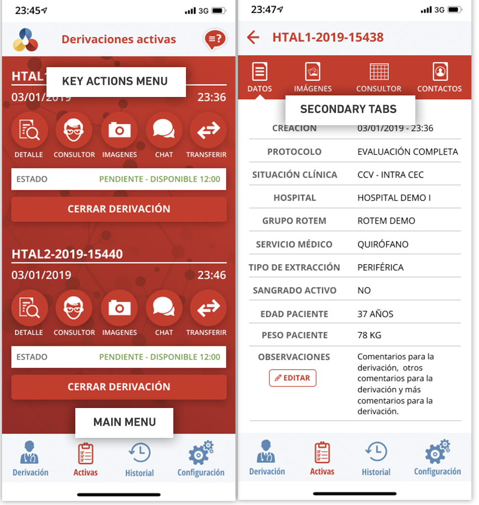
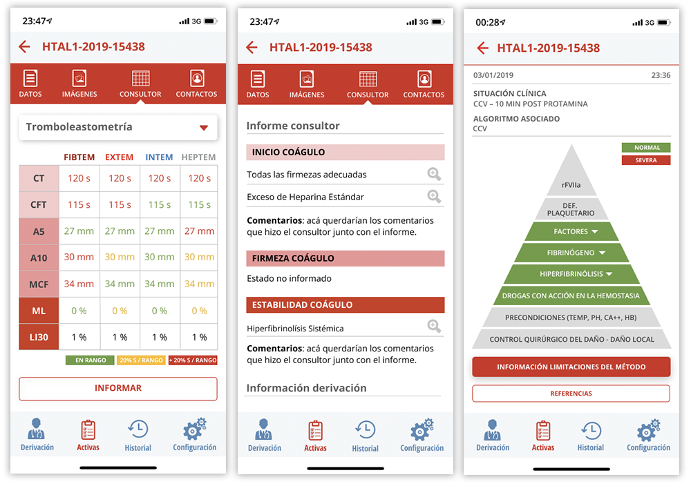
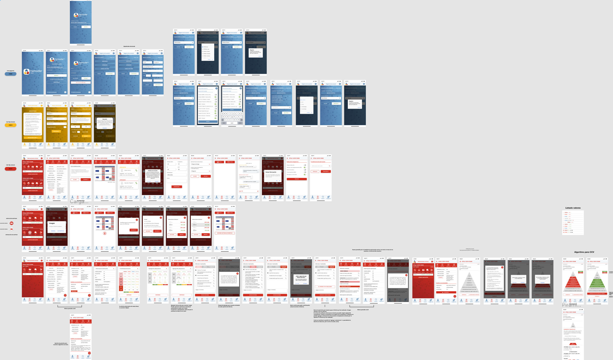
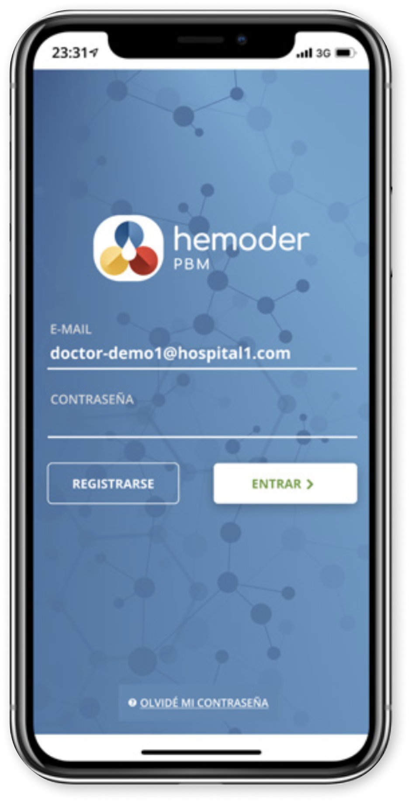

<section class="workDetail hemoder">
	<div class="workDetail-container">
		<div class="workDetail-intro">
			<h1>Hemoder</h1>
			<p>Hemoder is an app that helps to connect nearby hospitals to use one ROTEM® machine, a rapid differential diagnostics system.</p>
			<p>This system can reduce unnecessary transfusions, re-operation and infection rates, hospital length of stay, total hospital costs, and mortality.</p>
			<!-- <p class="workDetail-link"><a href="https://www.figma.com/file/irHvEzxCWBC041iSJ1ES2Z/Hemoder-PBM-1.0?node-id=0%3A1" target="_blank">See Design Demo </a></p> -->
		</div>

		<div class="workDetail-main">
			<h2>The Business Problem </h2>
			<p>After first validation and MVP development phase, it was necessary to redesign the app's aesthetics, fix usability problems, and fix bugs for its official launch and implementation in hospitals. </p>
		</div>

		<div class="workDetail-main">
				<h2>My role in the project</h2>
				<p>I was responsible for the visual design and user experience of the app. I worked along with a full-stack developer and a product owner.</p>
		</div>


<div class="spaceVert"></div>

		<div class="workDetail-main_full">
			<h2>The Approach</h2>
			<p>The first team working in the MVP tested the app in some hospitals as a demo. They gathered feedback, listed bugs, and they also got more information about the hospital workers who would use the app.</p>

			<p>To start working on the new design, I structured this information in roles, tasks, and situations where the app would be used. I then translated this into goals and unique functionalities for each role. </p>
		</div>

		<div class="workDetail-col">
			
			<h3>Doctors</h3>
			<p>They would be the ones starting a "case process" in the app. </p>
			<p>Their <u><strong>goal</strong></u> is to have a diagnostic on the patient as soon as possible.</p>
			<h4>Tasks</h4>
			<ul>
				<li>Create a case entering the patient's data in the app.</li>
				<li>Send the blood sample to the hospital where the Rotem machine is located.</li>
				<li>Check the results.</li>
				<li>Ask for expert advice if necessary.</li>
				<li>Input therapeutic indication and close the case.</li>
				<li>Access structured data cases. </li>
			</ul>
			<p>Their <u><strong>context</strong></u> is a fast-paced environment dealing with critical patients.</p>
		</div>

		<div class="workDetail-col">
			
			<h3>Operators</h3>
			<p>They would be the ones working physically with the Rotem machine. </p>
			<p>Their <u><strong>goal</strong></u> is to process the blood sample as soon as possible. </p>
			<h4>Tasks</h4>
			<ul>
				<li>Receive the blood sample.</li>
				<li>Access case data to read the protocol on how to process the blood sample and any additional information given by the doctor in charge.</li>
				<li>Update the case's status.</li>
				<li>Set up the camera device for capturing the results.</li>
				<li>Be available for communications from the other participants in the case.</li>
			</ul>
			<p>Their <u><strong>context</strong></u> is also a fast-paced environment, and they work on various cases and devices at the same time. </p>
		</div>

		<div class="workDetail-col">
			
			<h3>External specialist</h3>
			<p>They are the experts on interpreting the results from the Rotem machine. In some cases, the doctor in charge might need more information about the diagnostic and requires the expert's opinion.  </p>
			<p>Their <u><strong>goal</strong></u> is to interpret the study's values and case data to inform the results accurately.</p>
			<h4>Tasks</h4>
			<ul>
				<li>Access case data and indications from the doctor in charge.</li>
				<li>Look at values from the Rotem machine.</li>
				<li>Look at the recommended algorithm for this case.</li>
				<li>Interpret the results.</li>
				<li>Inform the result to the doctor in charge.</li>
			</ul>
		</div>


			<div class="workDetail-main_full">
				<p class="lead">As a team, we mapped this information and decided to prioritize features that ensure communication and fluid interaction with the case at any moment.</p>

				<p class="lead">My challenge was to present a lot of complex and technical information so that each profile could locate the data immediately, performing their tasks without error, and in the most efficient way. </p>
			</div>

			<div class="spaceVert"></div>


			<div class="workDetail-main_full flex">

			<h2 style="width:100%;">The Process</h2>

			<p class="flex-col-30">We used the functioning app as a base to create the new version, so in this case, it wasn't necessary to develop full wireframes. <br>	<br> To help users in their fast-paces environment quickly identify the main areas, I redesigned the UI differentiating each part of the process with a unique color.</p>

			<p class="flex-col-65">	</p>


			<p class="flex-col-30"><br></p>

			<p class="flex-col-65">One of the things that presented more issues with the users in the MVP test was the location and naming of features. As a team, we worked on a card sorting exercise to work on these things. We regroup the elements by task, moment, and role.
			<br>	<br>
			As a result, I restructured the main navigation, keeping the key features each user will need accessing the app.  I then,
			added a secondary tab menu grouping all case data to easy access. I also made some naming adjustments to the functions and made it easy to identify icons.
		</p>

			<p class="flex-col">To achieve high readability with complex and technical information, I used a white background with different colors as a quick visual cue to identify values out of range, different protocols, and stages throughout the analysis.<br>	<br>
I also designed a hierarchy with different heading levels, text, icons, and buttons to guide the user effectively through the information and actions necessary to them at that moment and removing any other information or element.</p>

			<p class="flex-col"></p>

			<p>I designed the main screens to get feedback from my team.
			As I worked on Figma, we were able to iterate directly on the design file speeding up the design process. </p>

			<p>While the developer started coding with the main flow, I completed the design. </p>

			<p><br></p>

			<p>From the design file as well, I made a high fidelity prototype to get more feedback. This prototype along with the comments from iteration, and the code snippet with CSS code, served as a hand-off file for the developer.</p>

			<p>During the final stage, I also worked on the CSS and HTML code to adjust visual details in the final product. </p>
		</div>

		<br><br>

		<div class="spaceVert"></div>

		<div class="workDetail-main_full flex">
			<div class="flex-col">
				<h2>The Results</h2>
				<p>Hemoder was installed in the first hospital, starting to be used immediately in real emergency cases achieving this way our goals.
				We also receive useful feedback for iteration that we could implement in the next update for future hospitals. </p>

				<div class="spaceVert"></div>

				<h2>Measuring Success</h2>
				<p>Although we didn't have any data to compare with a previous stage, the app got great reviews. It was successfully received and implemented in hospitals. Thanks to the detail of diagnostics, the app became a learning tool for doctors.  </p>
			</div>

			<div class="flex-col prototype">
				<a href="https://www.figma.com/proto/DdE4spIe4fQCs5TSf9YK44/Hemoder-PBM-1.0-Copy?node-id=0%3A8&viewport=155%2C240%2C0.05073494464159012&scaling=scale-down" target="_blank" class="workDetail-link">
				<br>
				Click too see the live prototype</a>
			</div>
			</div>

</div>
</section>
